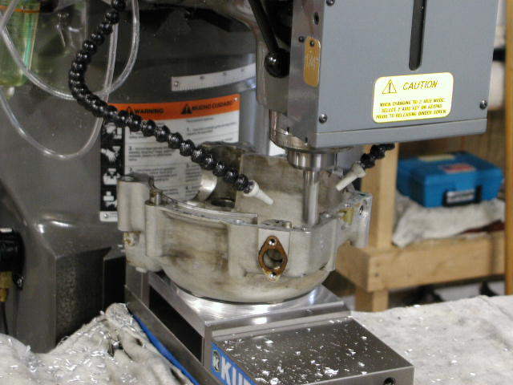
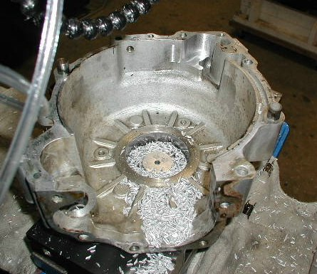
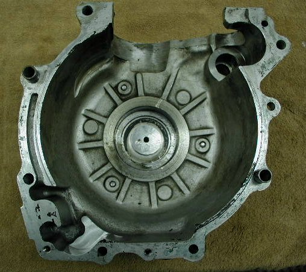

To fix the oil pressure loss on 1972 and 1973 750cc Commandos (see the technical article for more details) we mill out a pocket at the rear of the drive side crank case to open up the existing scavenge hole on the timing case and provide a place for the oil to pool. We bolt you case on our jig and mount the jig on our mill. We then run a preliminary program to trace the outline of the pocket to determine that our jig is correctly positioned and that the Norton factory has not produced another version of this crank case. We have seen at least two different versions of this crank case casting.

The oil scraper flange prior to milling with the outline of the pocket engraved to show the area to be removed.

After we determine that the case is correctly positioned and the pocket to be milled is correctly placed, we run our milling program as the above picture shows.

This picture is after milling the pocket with the case still mounted on our mill.

The finished drive side case. We can perform this service with the bearing in place by taping over the bearing, but the cleanup is easier
with the bearing removed.
Old Britts Services…. Motor & Gear Box
This page was written and designed by F. H. Eaton
& Associates if you have any questions or comments please
contact us at infon@fheaton.com